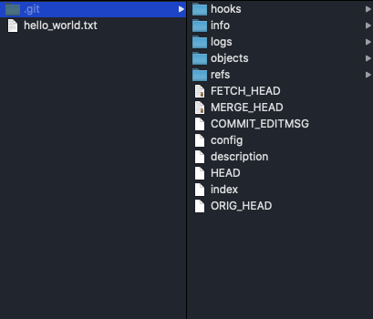

О GIT
Как правило, ваша работа с Git будет начинаться с того, что вам потребуется проинициализировать Git директорию в своем проекте. Это делается с помощью команды:
git init
Ее необходимо ввести в корне вашего проекта. Это создаст в текущем каталоге новый подкаталог .git со следующим содержанием:
Ее необходимо ввести в корне вашего проекта. Это создаст в текущем каталоге новый подкаталог .git со следующим содержанием:
1. config
В данном файле содержатся настройки Git репозитория. Например, здесь можно хранить email и имя пользователя.
2. description
Данный файл предназначен для GitWeb и содержит в себе информацию о проекте (название проекта и его описание). GitWeb - это веб интерфейс, написанный для просмотра Git репозитория используя веб-браузер. Если вы не пользуетесь GitWeb, то это не столь важно.
3. hooks
В этом каталоге Git предоставляет набор скриптов, которые могут автоматически запускаться во время выполнения git команд. В некоторых случаях это значительно упрощает разработку. Например, вы можете написать скрипт, который будет редактировать сообщение коммита согласно вашим требованиям.
4. info - exclude
Каталог info содержит файл exclude, в котором можно указывать любые файлы, и Git не станет добавлять их в свою историю. Это почти то же самое что и .gitingnore (возможно вы сталкивались с ним. Его можно найти в корневом каталоге вашего проекта), за тем исключением, что exclude не сохраняется в истории проекта, и вы не сможете им поделиться с другими.
5. refs
Каталог refs хранит в себе копию ссылок на объекты коммитов в локальных и удаленных ветках.
6. logs
Каталог logs хранит в себе историю проекта для всех веток в вашем проекте.
7. objects
Каталог objects хранит в себе BLOB объекты, каждый из которых проиндексирован уникальным SHA.
8. index
Промежуточная область с метаданными, такими как временные метки, имена файлов, а также SHA файлов, которые уже упакованы Git. В эту область попадают файлы, над которыми вы работали, при выполнение команды git add.
9. HEAD
Файл содержит ссылку на текущую ветку, в которой вы работаете.
10. ORIG_HEAD
Каждый раз во время слияния в этот файл попадает SHA ветки, с которой проводилось слияние.
11. FETCH_HEAD
Файл хранит в себе ссылки в виде SHA на ветки, которые участвовали в git fetch.
12. MERGE_HEAD
Файл хранит в себе ссылки в виде SHA на ветки, которые участвовали в git merge.
13. COMMIT_EDITMSG
Файл содержит в себе последнее введенное вами сообщение коммита.
Основные команды в Git.
git add
Команда git add добавляет содержимое рабочего каталога в индекс (staging area) для последующего коммита. По умолчанию git commit использует лишь этот индекс, так что вы можете использовать git add для сборки слепка вашего следующего коммита.
git status
Команда git status показывает состояния файлов в рабочем каталоге и индексе: какие файлы изменены, но не добавлены в индекс; какие ожидают коммита в индексе. Вдобавок к этому выводятся подсказки о том, как изменить состояние файлов.
git diff
Команда git diff используется для вычисления разницы между любыми двумя Git деревьями. Это может быть разница между вашей рабочей копией и индексом (собственно git diff), разница между индексом и последним коммитом (git diff --staged), или между любыми двумя коммитами (git diff master branchB).
git difftool
Команда git difftool просто запускает внешнюю утилиту сравнения для показа различий в двух деревьях, на случай если вы хотите использовать что-либо отличное от встроенного просмотрщика git diff.
git commit
Команда git commit берёт все данные, добавленные в индекс с помощью git add, и сохраняет их слепок во внутренней базе данных, а затем сдвигает указатель текущей ветки на этот слепок.
git reset
Команда git reset, как можно догадаться из названия, используется в основном для отмены изменений. Она изменяет указатель HEAD и, опционально, состояние индекса. Также эта команда может изменить файлы в рабочем каталоге при использовании параметра --hard, что может привести к потере наработок при неправильном использовании, так что убедитесь в серьёзности своих намерений прежде чем использовать его.
git rm
Команда git rm используется в Git для удаления файлов из индекса и рабочей копии. Она похожа на git add с тем лишь исключением, что она удаляет, а не добавляет файлы для следующего коммита.
git mv
Команда git mv — это всего лишь удобный способ переместить файл, а затем выполнить git add для нового файла и git add для старого.
git clean
Команда git clean используется для удаления мусора из рабочего каталога. Это могут быть результаты сборки проекта или файлы конфликтов слияний.
Команды ветвления и слияния в Git.
git branch
Команда git branch — это своего рода “менеджер веток”. Она умеет перечислять ваши ветки, создавать новые, удалять и переименовывать их.
git checkout
Команда git checkout используется для переключения веток и выгрузки их содержимого в рабочую директорию.
git merge
Команда git merge используется для слияния одной или нескольких веток в текущую. Затем она устанавливает указатель текущей ветки на результирующий коммит.
git mergetool
Команда git mergetool просто вызывает внешнюю программу слияний, в случае если у вас возникли проблемы слияния.
git log
Команда git log используется для просмотра истории коммитов, начиная с самого свежего и уходя к истокам проекта. По умолчанию, она показывает лишь историю текущей ветки, но может быть настроена на вывод истории других, даже нескольких сразу, веток. Также её можно использовать для просмотра различий между ветками на уровне коммитов.
git stash
Команда git stash используется для временного сохранения всех незакоммиченных изменений для очистки рабочей директории без необходимости коммитить незавершённую работу в новую ветку.
git tag
Команда git tag используется для задания постоянной метки на какой-либо момент в истории проекта. Обычно она используется для релизов.
Команды для совместной работы и обновлению проектов в Git.
git fetch
Команда git fetch связывается с удалённым репозиторием и забирает из него все изменения, которых у вас пока нет и сохраняет их локально.
git pull
Команда git pull работает как комбинация команд git fetch и git merge, т.е. Git вначале забирает изменения из указанного удалённого репозитория, а затем пытается слить их с текущей веткой.
git push
Команда git push используется для установления связи с удалённым репозиторием, вычисления локальных изменений отсутствующих в нём, и собственно их передачи в вышеупомянутый репозиторий. Этой команде нужно право на запись в репозиторий, поэтому она использует аутентификацию.
git remote
Команда git remote служит для управления списком удалённых репозиториев. Она позволяет сохранять длинные URL репозиториев в виде понятных коротких строк, например "origin", так что вам не придётся забивать голову всякой ерундой и набирать её каждый раз для связи с сервером. Вы можете использовать несколько удалённых репозиториев для работы и git remote поможет добавлять, изменять и удалять их.
git archive
Команда git archive используется для упаковки в архив указанных коммитов или всего репозитория.
git submodule
Команда git submodule используется для управления вложенными репозиториями. Например, это могут быть библиотеки или другие, используемые не только в этом проекте ресурсы. У команды submodule есть несколько под-команд — add, update, sync и др. — для управления такими репозиториями.
Команды для осмотра и сравнения в Git.
git show
Команда git show отображает объект в простом и человекопонятном виде. Обычно она используется для просмотра информации о метке или коммите.
git shortlog
Команда git shortlog служит для подведения итогов команды git log. Она принимает практически те же параметры, что и git log, но вместо простого листинга всех коммитов, они будут сгруппированы по автору.
git describe
Команда git describe принимает на вход что угодно, что можно трактовать как коммит (ветку, тег) и выводит более-менее человекочитаемую строку, которая не изменится в будущем для данного коммита. Это может быть использовано как более удобная, но по-прежнему уникальная, замена SHA-1.
Команды для отладки в Git.
git bisect
Команда git bisect — это чрезвычайно полезная утилита для поиска коммита в котором впервые проявился баг или проблема с помощью автоматического бинарного поиска.
git blame
Команда git blame выводит перед каждой строкой файла SHA-1 коммита, последний раз менявшего эту строку и автора этого коммита. Это помогает в поисках человека, которому нужно задавать вопросы о проблемном куске кода.
git grep
Команда git grep используется для поиска любой строки или регулярного выражения в любом из файлов вашего проекта, даже в более ранних его версиях.
Полезные материалы
Дополнительная информация об основных командах Git.
Начало работы с Git.
30 команд, необходимых для освоения интерфейса командной строки Git.